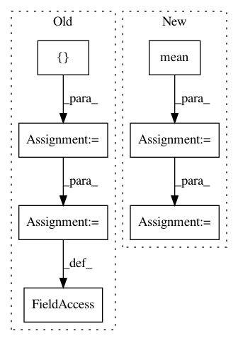

0de148f6892361e61d4b68cf97814e73692f6b1a,docs/_static/examples/gan.py,,,#,124
Before Change
// Configure data loader
os.makedirs("./data/mnist", exist_ok=True)
transform = transforms.Compose([
transforms.ToTensor(),
transforms.Normalize((0.5, 0.5, 0.5), (0.5, 0.5, 0.5))
])
dataset = datasets.MNIST("./data/mnist", train=True, download=True, transform=transform)
dataloader = torch.utils.data.DataLoader(dataset, batch_size=batch_size, shuffle=True, drop_last=True)
// Model and optimizer
After Change
state[DISC_OPT].step()
from torchbearer.metrics import mean, running_mean
metrics = ["loss", mean(running_mean(D_LOSS)), mean(running_mean(G_LOSS))]
trial = tb.Trial(generator, None, criterion=gen_crit, metrics=metrics, callbacks=[saver_callback])
trial.with_train_generator(dataloader, steps=200000)
trial.to(device)
In pattern: SUPERPATTERN
Frequency: 3
Non-data size: 7
Instances
Project Name: ecs-vlc/torchbearer
Commit Name: 0de148f6892361e61d4b68cf97814e73692f6b1a
Time: 2019-03-14
Author: mp2u16@ecs.soton.ac.uk
File Name: docs/_static/examples/gan.py
Class Name:
Method Name:
Project Name: rusty1s/pytorch_geometric
Commit Name: 17aafdea24122bbb777f71a8ea7c2505e3fee84c
Time: 2019-03-15
Author: matthias.fey@tu-dortmund.de
File Name: torch_geometric/nn/models/autoencoder.py
Class Name: GAE
Method Name: reconstruction_loss
Project Name: PacktPublishing/Deep-Reinforcement-Learning-Hands-On
Commit Name: 58ff5635b2a268e6726081bc4d40923615652e27
Time: 2017-12-05
Author: max.lapan@gmail.com
File Name: ch09/04_pong_pg.py
Class Name:
Method Name: